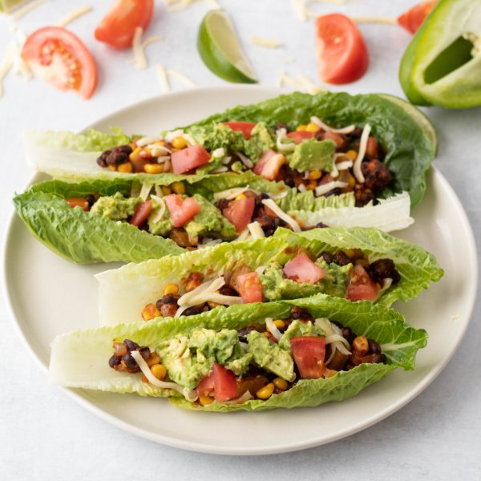

Sautéed Vegetable & Black Bean Tacos Boats with Tangy Tomato Guacamole

Total Time
35 min
Nutrition (per serving)
663.4 kcalCalories
26.8 gProtein
82.2 gCarbs
30.9 gFat
Full nutrition table
| Calories | 663.4 kcal |
| Total fat | 30.9 g |
| Saturated fat | 7.3 g |
| Trans fat | 0.2 g |
| Cholesterol | 22.4 mg |
| Sodium | 721.1 mg |
| Carbohydrates | 82.2 g |
| Fiber | 30.4 g |
| Sugars | 15.3 g |
| Protein | 26.8 g |
| Potassium | 2343.6 mg |
| Calcium | 353.6 mg |
| Iron | 8.2 mg |
| Vitamin A | 2222 IU |
| Vitamin C | 103.9 mg |
| Vitamin D | 4.5 IU |
Cookware
Ingredients
- 2avocados
- 2 (15 oz) cansblack beans
- 2 cupsfrozen corn
- 4 clovesgarlic
- 2green bell peppers
- 2limes
- ½ (8 oz) blockmozzarella cheese
- 1 headromaine lettuce
- 4tomatoes
- 2 (8 oz) canstomato sauce
- 1 mediumyellow onion
- black pepper
- chili powder
- cumin, ground
- extra virgin olive oil
- salt
Steps
- Wash and dry the fresh produce.2 green bell peppers
4 tomatoes
2 limes
1 head romaine lettuce
2 avocados - Drain and rinse the beans in a colander; set aside to drain further.2 (15 oz) cans black beans
- Seed and medium dice the bell peppers.
- Peel and small dice the onion.1 medium yellow onion
- Preheat a large skillet over medium-high heat.
- Peel and mince the garlic.4 cloves garlic
- Once the skillet is hot, add oil and swirl to coat the bottom.2 tbsp extra virgin olive oil
- Add onion, bell pepper, and garlic to the skillet; cook, stirring occasionally, until softened, 5-6 minutes.
- Grate mozzarella.½ (8 oz) block mozzarella cheese
- Add beans, corn, tomato sauce, and spices to the skillet, stirring to combine. Reduce heat to low and simmer for 15 minutes, stirring occasionally.2 cups frozen corn
2 (8 oz) cans tomato sauce
2 tsp chili powder
2 tsp cumin
1 tsp salt
½ tsp black pepper - Meanwhile, halve and pit the avocadoes. Slice while still in the skin, then scoop out into a medium bowl; mash slightly with a fork.
- Medium dice the tomatoes; place in the bowl with the avocado.
- Juice limes into the bowl, add salt, and stir to combine.½ tsp salt
- Separate whole leaves from the head of romaine to use as taco shells.
- To serve, arrange romaine leaves on plates and fill with seasoned beans and veggies. Top with guacamole and cheese. Enjoy!